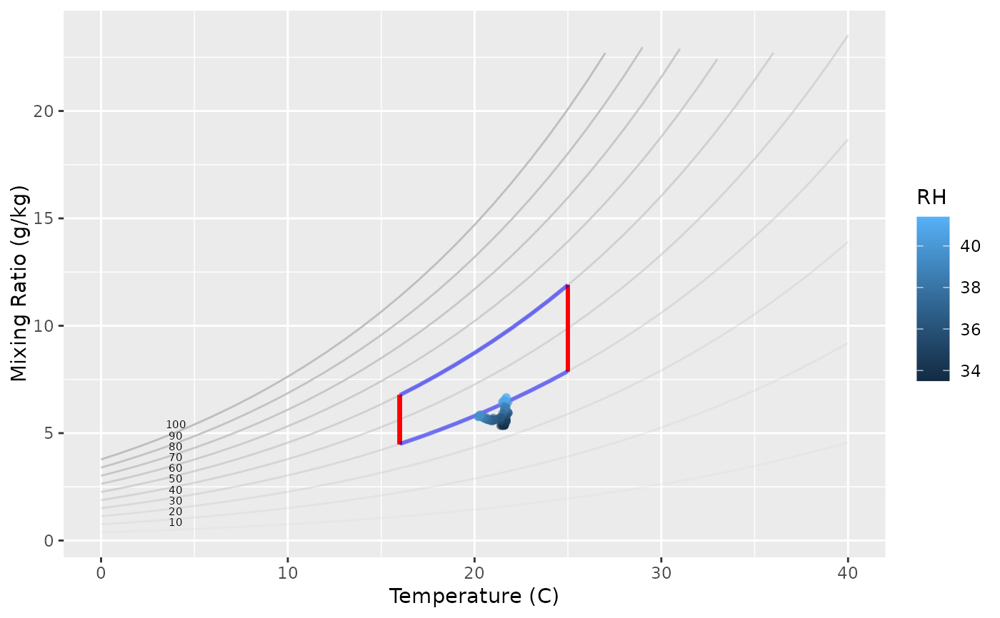

Psychrometric chart from temperature and humidity
graph_psychrometric.RdProduces a psychrometric chart from temperature and humidity data.
Arguments
- mydata
A data frame containing temperature and humidity data.
- Temp
Column name in mydata for temperature values.
- RH
Column name in mydata for relative humidity values.
- LowT
Numeric value for low temperature limit.
- HighT
Numeric value for high temperature limit.
- LowRH
Numeric value for low relative humidity limit.
- HighRH
Numeric value for high relative humidity limit.
Examples
data <- data.frame(Temp = c(20, 25, 30), RH = c(50, 60, 70))
graph_psychrometric(data, Temp, RH, LowT = 15, HighT = 25, LowRH = 40, HighRH = 60)
#> Warning: All aesthetics have length 1, but the data has 3 rows.
#> ℹ Please consider using `annotate()` or provide this layer with data containing
#> a single row.
#> Warning: All aesthetics have length 1, but the data has 3 rows.
#> ℹ Please consider using `annotate()` or provide this layer with data containing
#> a single row.
#> Warning: Removed 11 rows containing missing values or values outside the scale range
#> (`geom_line()`).
#> Warning: Removed 27 rows containing missing values or values outside the scale range
#> (`geom_line()`).
#> Warning: Removed 45 rows containing missing values or values outside the scale range
#> (`geom_line()`).
#> Warning: Removed 1 row containing missing values or values outside the scale range
#> (`geom_point()`).

# graph_psychrometric(head(mydata), Temp, RH, LowT = 15, HighT = 25, LowRH = 40, HighRH = 60)